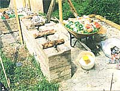

Country Skills
Making permanent use of plastic drick bottles, aluminum cans, and elbow grease.
Having lived most of our married lives in urban areas, when we retired in 1988, we wanted to experience a life of greater self-sufficiency. We had been subscribers to Mother Earth News for years and had some pretty good ideas on what we needed to do, starting with buying part of an old mountain farm in western North Carolina. We made sure we had lots of water: a gravity spring, a mountain stream, and a fast-flowing creek. In the old farmhouse, we installed an oil furnace that is gravity fed and doesn't need power from the grid to provide heat. We put in a wood stove to take advantage of the dead trees that had accumulated on our 25 acres over the past decade. A farm that had been neglected for years was a bonus because as vegetarians we wanted to raise food organically, and over time the chemical fertilizers and pesticides that may have been used would have leached out of the soil. Also the wild edibles that grew there naturally had had a chance to grow back. We quickly established an organic raised-bed garden to grow our own food.
From the then-published Homesteader News and a homesteading seminar presented in our home by Sherrie and Norm Lee, we had learned about growing the more hardy plants under plastic in the winter. Having appetites that included tomatoes and peppers, we also built a small lean-to greenhouse on the front of our farmhouse the first fall we lived on the property. The lean-to worked out well, providing solar heat to the house on cold days and using heat from the house on cold nights to provide a reasonably even temperature for growing finicky plants like tomatoes and peppers. We now have some plants that have lived for years. The lean-to location couldn't really be expanded to include what we were growing under plastic, so over the years, we decided to build a solar greenhouse.
As anyone who has lived on an average fixed retirement income knows, squeezing out money for capital improvements is a challenge. We had already built a twostory pole barn/workshop, so we decided we could build the greenhouse ourselves. We had a budget of $3,000 for a thermal greenhouse with an interior space of 400 square feet. As we drew our plans, it was soon clear that $3,000 was far short of the cost of materials alone. However, we weren't willing to compromise on some key requirements. The greenhouse had to provide essentially all of its own heating and cooling in an area where winters can get down to zero and summers up to 90 plus. Our lifestyle requires that we be away for days at a time, so we needed a design that was passive and could cope with loss of power. We had been active in local environmental projects since moving to our farm, so it occurred to us that many recycled materials can be used in construction, and that from time to time useful building materials are surplused at only part of their retail cost. The key idea for really low-cost construction that would meet our solar greenhouse needs came to us when we reviewed an old MOTHER EARTH News article on cordwood construction. We speculated that if most of the cordwood could be replaced with aluminum cans and plastic drink bottles to make a hollow wall that could be filled with plastic packing, we could have a super-insulated wall of great strength; and by filling the plastic bottles with water, we would have more thermal storage besides.
Having decided on the basic structural system, we quickly drew up the details. For maximum thermal gain at midwinter, the glazing angle was set to be perpendicular to the noon sun during January and February, making the glazing angle for our latitude 50° rather than the 59° that it would have been at the winter solstice. A spot was available in our little valley that was not in the shade at that time of year. Except for the southern exposure, there was to be no glazing in order to minimize heat loss on cold, dear nights. We did compromise by adding several windows to help with the summer ventilation. The pitch of the back roof was to be similar to one we had seen in Britenbush, Oregon; just enough that the top of the back wall would be heated by the sun in midwinter. This arrangement also shades some of the inside of the greenhouse in summer, reducing the summer heat load. We used space in the front wall and back roof for large swinging panels, activated by passive thermal actuators, to provide incoming and outgoing ventilation. We had seen similar large panels for ventilation in Acrosanti, Arizona, but the community had sufficient labor to operate the panels manually.
We designed the dimensions of our greenhouse for standard sizes of lumber: 16 feet along the slant of the front glazing, and 10 feet on the slant for the back roof rafters. We chose to place the greenhouse on the side of a small hill, allowing much of the lower wall to be bermed into the earth. A cross section of the plan shows that the use of bracing beams from the top of the back wall to the glazing support members requires no internal supports that might interfere with placing tables to hold the plants. The inside width ended up at 15 feet. The length was determined by what we could afford. The glazing we selected came most economically in six-foot modules. We settled on 29 feet of length on the inside. A key decision in the design was the selection of dualsurface polycarbonate glazing. While our goal had been to make this project a demonstration of the use of as much recycled material as possible, using surplused dual-pane glass panels for glazing, as we had done in our lean-to, proved impractical. We had misgivings about glass anyway, because several of the dual-pane glass panels we had used on our lean-to greenhouse had apparently lost their seals and fogged up. Also, we had experience installing doublepane glass and knew how heavy it was.
Glass would have required a very strong support structure, as well as hiring a crane and labor for installation. The polycarbonate was half the price, and in a friend's experience it had shown no deterioration after 10 years. Also, the polycarbonate is a better bet in hailstorms and earthquakes, since it is extremely tough. As a bonus it is coated on the outside to receive ultraviolet rays and on the inside to reduce the loss of heat by radiation at night.
From our experience in building our combination pole barn/workshop, we knew that we needed some time to find surplus materials, so we started collecting them about six months before breaking ground. Some items we didn't actually find until work was well under way. We regularly dropped by the local lumber yards and recycling centers. The lumber yards typically dispose of discontinued, slightly damaged wood or seconds for half price or less. The recycling centers became interested in our project and often gave us what they had free of charge. The major items we got in this manner started with rebar and ended with a used woodstove we felt we might need on the very coldest nights.
One of the important factors in being able to use unconventional materials and construction methods was that our greenhouse was classed as an agricultural building by the local authorities and hence was not subject to either the building codes or the need for a permit. Some of the conventional materials we needed-such as structural lumber, plywood, fiber-glass insulation, fasteners, plumbing, and most electrical items-we didn't find at surplus and had to buy. Keeping the dirt floor not only saved money but got the greenhouse classed as a temporary structure, which is taxed at the lowest level.
Getting ready for breaking ground, we realized we would be mixing tons of mortar, a job that's nearly impossible to contemplate doing by hand. We found that the cost of renting a mixer for a week would be comparable to buying one. So the obvious answer was to buy the smallest mixer we could find in a discount mail-order catalog that in one batch would make all the mortar we could use before it began to set. We knew our limits and the advantages of some machines. When it came to excavating, we hired a backhoe for a morning's work in making a flat foundation site in the side of our hill. It turned out to be very rocky ground, including a one-ton boulder the backhoe had to roll out of the way. We ended up with an additional room-size flat space immediately behind the greenhouse location, and on the spur of the moment we decided to add a workroom behind the greenhouse.
The next task was to prepare the ground for pouring footers as well as a concrete floor for the added room. To get a slight slope in the floor, we used a transit left over from our pole barn experience and set up 1 x 4 forms for the footers. These were fastened to stakes. We then dug down an additional four inches into the rocky soil so that the footers would be eight inches in depth. Next we straightened the bent rebars, using a handy fork in a nearby tree as a vise, and set the rebars into the footer forms. Some plumbing and wiring that was to be run under the concrete was then installed and we were ready for pouring.
Yards of concrete is something it never pays to make yourself. Our concrete estimate for footers was only three cubic yards, plus one additional yard for the workroom floor. Since the minimum order was five yards, we added to our plans a concrete pad outside the large double doors. We temporarily took up a section of forms so that when the ready-mix concrete truck came the concrete could be poured from the middle of the footing area, minimizing wheelbarrow work. All went as planned, and after a morning of hard work, we thought that in a few days we would be starting on our modified cordwood walls. This was early May so we would have the warm season for our mortar work.
Unfortunately, we had not factored in summer projects, like cutting the grass, planting and maintaining the garden, picking berries, and laying in the next winter's wood supply. It was fall before we set the first can or bottle in mortar. Recognizing that our mortar work would be going on during the winter, we got calcium chloride to add to the mortar to prevent its freezing and cracking. We also saw that the water we planned to put in the drink bottles for thermal mass would freeze in the first winter and crack the wall. Plain salt added to the water would take its freezing point down to zero degrees, and if spilled, would be relatively harmless to the environment. It was also the cheapest antifreeze identified.
The design of our walls is really two walls side by side, the outside wall of empty drink cans set in mortar, and the inside wall of plastic drink bottles filled with water also in mortar. An occasional piece of black locust cordwood spans across, joining the two walls for strength. Most cordwood experts advise the addition of sawdust to the mortar to make it stiff enough that it doesn't slump out in the wider spaces between the round stock-as opposed to the usual small spaces between square bricks. We found immediately that mortar containing sawdust does not adhere to aluminum cans or plastic bottles, and we had to omit the sawdust. The mortar then slumped badly and ran away from our cans and bottles. So we made a movable form from scrap wood to hold the mortar in place. On the inside where we wanted a hollow space for the insulation, we put in the foam packing to act as a form as we placed the mortar. Not sure how well our bottle-and-can wall would hold up in an earthquake, we used a length of rebar in both outer and inner walls about every five layers. To be on the really safe side, we also put rebar horizontally between the walls and vertically in them.
Wiring was anticipated and put in the walls as we went. Soon the walls became too high to work on and we needed sturdy work platforms. This is where the John Deere steel tractor shipping frames came into play as scaffolding. First we laid 2 x 4s across a single frame to give us a work platform about 40 inches high. The frames are designed for safe stacking upon each other, so we could have a work platform at any needed height. When we got to a height of 10 feet, which was the design height of the back wall, we closed in the top of the hollow space with mortar, installing foundation bolts which would later be used to hold down a sill plate. We remembered to place a piece of prefabricated chimney through the back wall for the future stovepipe.
During all early masonry work, we had used an old dog-house for storing our on-site tools. Anticipating the need for many more tools every day, we put priority on finishing up the work-room-first for tool storage and then for materials in process. One of the side walls of the workroom was a 16-inch-thick modified cordwood wall which served as a buttress to the back wall of the greenhouse. It had been done when we did the back wall so we only had two walls of the workroom to frame in, one containing a surplus standard door and one of our surplus windows. Our plan called for 2 x 6 studs to insure good insulation. The shed roof also used 2 x 6s and was framed for a skylight to provide good working light. We used some of the redwood siding, which had been in storage for nearly a year, over building paper to close in the workroom. The roof, glazing for the skylight, window, and door came next and we had a weatherproof workroom.
We then turned our attention to the front wall of the greenhouse. This went very quickly because the wall was only waist-high and the glazing would start from the top of this front wall. It, too, was closed in with mortar and its share of foundation bolts to secure a front sill plate. The masonry work was done by midwinter, and we took time off during the coldest months, mid-January to mid-March. The next task was to frame in both the west and east walls, again using 2 x 6 lumber. The west wall was to contain large double doors, which we made wide enough to admit our pickup truck. The east wall was framed far our emergency exhaust fan and a temporary section to allow for a future eight-foot expansion to the east. We anticipate someday putting in a space for starting plants, and behind it a root cellar. Because most of our breezes come from the west, our west wall was framed for the three other surplus windows to give more summer ventilation. These framed walls were leveled, plumbed, and squared very carefully because there could be no fudging with the glazing panels, which would have to fit very closely, each panel being exactly 6 feet wide and 16 feet long.
The major remaining tasks were to take place 16 feet in the air, so it was necessary to use the John Deere tractor frames to build a catwalk 14 feet high along the full 30-foot length of the greenhouse. Since nearly two months' work was to be done from the catwalk, we rigged safety lines on both sides of it. The first step was to pull into place extra long structural members from the adjacent hill and bolt them together to form a single composite ridge beam running the full length of the greenhouse and overhanging at each end. A slot had been framed at the peak of each end wall to accept this ridge beam. Also, we had installed braces from the end walls to the ridge beam at both ends. Next we bolted the 16-foot slant supports for the glazing to the ridge beam and bolted into place the opposite roof rafters of the back roof. The other ends of each were, of course, attached to their respective sills on top of the front and back walls. We made careful adjustments so that the ridge beam remained level for its full length. Then we ran collar beams from the top of the back wall to each 16-foot slant glazing support for bracing. As the back roof rafters were put in place, we framed a dormer in the back roof for the exhaust ventilation panel. The next step was to cover the back roof with roof sheathing, leaving a two-foot-wide space next to the ridge beam through which we could work.
We had to pick up the glazing panels from the supplier to save a large shipping charge since 6' x 16' panels are not easily shipped by common carrier. To transport the large panels, we built a special carrier on the top of our VW camper. When we got the panels home, we used our truck's winch in conjunction with a jack pole on the top of the greenhouse to lift the panels into place. The panels are awkward but light and it only took us a day and a half to complete their installation using the special aluminum extrusions that hold them together and fasten them down at their edges. We also fastened them with through fasteners to the three perlins that run parallel to the ridge beam. We then finished closing in the back roof and covered it with felt building paper and the aluminum roofing. Before we were finished with the catwalk, we insulated the underside of the back roof and the inside of the dormer, and then covered all the insulation with white tempered masonite board.
From the outside, we installed the windows, the exhaust fan, and most of the remaining redwood siding. Then we insulated from the inside and again covered the insulation with white tempered masonite board. The large doors and the swinging vents were made to fit their respective openings. To be nearly compatible with the insulation levels elsewhere in the greenhouse, we made the doors and swinging vents four inches thick by nailing plywood on the outside and masonite on the inside of frames made from 2 x 4s. The swinging vents had to be counterweighted so as not to exceed the low torque available from the thermal actuators for both opening and closing. These actuators were not available locally, so we ordered them from a specialty house.
We installed a small porcelain laundry tub that had been removed from our farmhouse and connected it to our garden water system, which has as its source a bucket under a waterfall partly up our mountain. Then we finished up the wiring which is both 115 volts a.c. and 12 volts d.c. for backup. Moving everything out of the storage room, we finished it off, including a small closed-off area for a portapotti. To help make the workroom more useful in the future, we put in several cabinets and a countertop. Before doing anything else , to tidy up the work site, we placed the surplus foam building panels against the outside masonry walls and backfilled with dirt to get our berming. We bought a used woodstove and connected it up with stovepipe.
By now the first frost was fast approaching and we wanted to move some of our summer garden indoors, so we cut down some of the John Deere frames to table height and covered them with 2 x 4s. We put soil, rock dust, and manure in surplus department store storage tubs and transplanted what we wanted to save from our summer raised-bed garden.
During our first winter, we tracked the indoor and outdoor temperatures quite carefully so that we would be able to tell from the weather forecast if heating the greenhouse would be advisable on any given night in order to prevent it from freezing inside. We found that when it went down to 10°F outside, we had a margin of safety of about four degrees inside. We came to the conclusion that on nights when the outside temperature was forecasted to be as low as 5°, we should supply heat. The first winter there were two nights when it was that cold or colder, and we fired up the woodstove before going to bed. The second winter was more severe and we used the stove three times. From the graph, you can see that the greenhouse temperature doesn't drop quite as quickly as the outside temperature at the end of the night, and we attribute this to the thermal mass of concrete and water, as well as to heat from the ground, which in our climate generally doesn't freeze to a depth of more than several inches. We also found that the worst nights were ones that were clear after a cloudy day when the greenhouse did not have a chance to pick up much heat.
A very interesting profile emerged for sunny cold days. Even in the middle of winter, with all our insulation, in the first year both vents of the greenhouse would open by late morning and stay open for several hours, losing a lot of heat. We assumed that we had a mismatch between thermal mass and sun load and needed more thermal mass. Through the winter, we added thermal mass by storing water in used milk jugs and large drink bottles and putting them under the tables. By the beginning of the second winter, we had added tons of thermal mass in the form of water. From the graph, it is clear that we achieved a much better balance. For a day that got much warmer than any day the previous year, the greenhouse did not get as hot and the ventilation panels barely opened. We measured a rise in the stored water of three degrees on a clear sunny day. Another important benefit of this extra water is that in extremely cold weather, our waterfall may freeze for a week and we lose our normal water supply. The water stored under the tables represents a few months' supply.
We also learned the difference between an unheated thermal stand-alone green-house and a hothouse. Our lean-to green-house that receives heat from the house on cold nights is essentially a hothouse, and semitropical plants like tomatoes and peppers thrive there. These plants, however, don't like the near-freezing temperatures that they experience in the new greenhouse, and will go dormant during midwinter.
We were disappointed that we didn't get as much thermal storage from our rear 10-foot wall as we had hoped. The heat cycle is apparently too short to add as much heat to the rear wall as we had planned. Were we to build another greenhouse against the same requirements, we would have a rear thermal storage wall with a maximum height of eight feet, or even less. This would require a greater span for the back roof but would give two feet or more of width to the greenhouse for winter growing.
We had designed our polycarbonate glazing supports for a snow load of 40 lbs./sq. foot. We were very pleased that snow slid right off, with very little sticking to it, wet or dry.
When on the spur of the moment we added the workroom, we also added $500 to our budget. With that adjustment in mind we were about $200 under cost. In the future when we put the addition on the east end, we will have room for another passive exhaust vent and pick up more sun in the winter. With the extra solar heat, we might go through the whole winter without using the stove at all, because the end where the addition is to be will be almost completely bermed except for the glazing, roof, and gable end. We are greatly pleased with the degree of self-sufficiency we have achieved with our new greenhouse and feel it is a much better expenditure of money than a new car, for example. Besides the additions to the greenhouse, the last step in self-sufficiency we are planning for our little mountain farm is to tap our mountain stream at an elevation of 350 feet above the greenhouse for a small 12-volt d.c. hydrosystem.
|
 1. Black locust cordwood to connect two parts of wall together. |
2. Aluminum in mortar with foam insulation. |
3. Drink bottles being set in mortar. |
|
4. Greenhouse with starter plants. |
5. Placing rebar in the walls. |
6. We stacked tractor shipping frames to form work platforms. |
|
6. We stacked tractor shipping frames to form work platforms. |
8. Framing of rear roof and glazing supports. |
9. Doris lifting rear roof sheathing plywood. |
|
9. Doris lifting rear roof sheathing plywood. |
10. and 11 Bill and Doris in their greenhouse after the first winter they used it. |
|
|
|
|
|